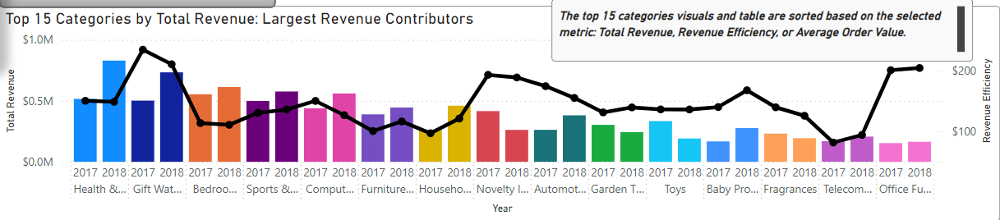

Dashboard 1: Revenue Efficiency Analysis by Product Category
Purpose
This dashboard provides a detailed analysis of revenue efficiency across
product categories, focusing on trends, profitability proxies, and actionable
insights to enhance performance. Data now focuses on 2017 and 2018 only.
Key Insights
-
Health & Beauty remains the top-earning category, but Personal Computers is
the most efficient category with a Revenue Efficiency (RE) value of
$1,144.05. Household Pastels, Oven & Café (RE: $630.25), and Electrical
Products ($514.01) exceed triple the average RE.
-
Categories like Personal Computers (30 products, 9 sellers) and Office
Furniture demonstrate high efficiency despite smaller product lines,
highlighting growth potential.
-
Gift Watches (RE: $219.00) and Office Furniture (RE: $202.01) remain
standout categories in RE. Office Furniture, in particular, shows growth
potential with a relatively small product line (301 products).
-
A relative difference (%) column reveals multi-item order likelihood. On
average, the difference is 12.14%, indicating limited multi-item
ordering. Notably, Telecommunications (24.90%) and Signaling & Safety
Products (26.55%) double the average, suggesting higher multi-item
purchases.
-
Year-over-year (YoY) growth analysis shows an overall revenue growth of
20.81% between 2017 and 2018. Categories like Household Pastels,
Oven, & Café had the highest growth (4,723.90%) due to product line
expansion.
Dashboard Features and Sections
Filters and Selections
- Time Slicer: Filters data for 2017 and 2018 only.
-
Metric Toggle: Allows users to toggle between Total
Revenue, RE, or AOV, dynamically updating all visuals and the table.
-
Category Slicer: Filters for the top 15 categories,
excluding Personal Computers due to disproportionately high RE values.
Screenshots

Time Slicer

Metric Toggle

Category Slicer
YoY Growth % KPI Card
Purpose: To provide a quick view of the overall
Year-over-Year (YoY) growth percentage for revenue.
Key Insight: The KPI card highlights an overall growth of
**20.81%** between 2017 and 2018, with additional breakdowns available for
specific categories.
Features:
- Dynamic updates based on filters like year, product category, or selected
metric.
- Conditional formatting with upward (green) and downward (red) arrows to
indicate growth or decline.
- Interactive: Clicking on bars, bubbles, or table rows dynamically updates
the KPI to reflect the selected category's growth.
Screenshots

YoY Growth KPI Card
Visualizations
1. Revenue and Efficiency Trends Across Product Categories
Purpose: To compare total revenue and revenue efficiency
across categories over 2017 and 2018.
Key Insight: The bar chart dynamically updates based on the
selected metric, while the line consistently shows RE trends, providing a
clear view of efficiency across the years.
Features:
- Dynamic bar chart displays metrics like Total Revenue, RE, or AOV by
category.
- Line chart overlays RE values to show trends across categories.
- Breakdown by year (2017, 2018) allows comparison within each category.
Screenshots

Revenue Efficiency Trends Chart
2. Revenue Efficiency Trends Across Product Categories Scatter Chart
Purpose: To visualize relationships between total revenue,
RE, and product count for the top 15 categories.
Key Insight: The scatter chart reveals how efficiently
categories perform relative to revenue, product count, and chosen metric.
Features:
- Dynamic updates based on selected metric (Total Revenue, RE, or AOV).
- Bubble size reflects product count, emphasizing smaller or larger product
lines.
- Highlights the top 15 categories for comparison.
Screenshots

Revenue Efficiency Trends Scatter Chart
3. Product Category Performance Summary
Purpose: To provide a detailed summary of product categories
with key metrics for performance evaluation.
Key Insight: Highlights categories exceeding RE thresholds,
significant YoY growth, and relative differences (%), revealing multi-item
purchase likelihood.
Features:
- Metrics include Total Revenue, Order Count, Product Count, AOV, RE,
Relative Difference (%), and YoY Growth %.
- Conditional formatting emphasizes RE thresholds and significant YoY
changes.
- Dynamic sorting based on selected metrics for deeper analysis.
Screenshots
Product Category Performance Summary Table
Insights in Action
Suggested strategies based on findings:
-
Focus on categories with high YoY growth (e.g., Household Pastels, Oven &
Café) to capitalize on rapid product expansion.
-
Investigate categories with high relative differences (%) like
Telecommunications and Signaling & Safety Products to optimize multi-item
orders.
-
Prioritize marketing efforts for categories with strong RE and consistent
growth, such as Gift Watches and Office Furniture.
Measures Used
For a complete overview of measures used, visit the
DAX Measures Document. Relevant measures: